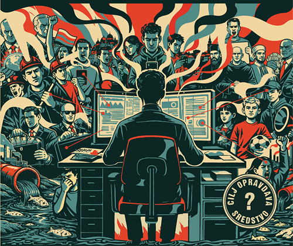

Digitalna igra uloga o medijskoj pismenosti, manipulaciji i kritičkom mišljenju — namenjena učenicima srednjih škola u Srbiji i Crnoj Gori.
TRUE LIES je obrazovni projekat koji sprovodi Goethe-Institut u Srbiji, finansiran od strane Ministarstva spoljnih poslova SR Nemačke. Kroz igranje uloga, učenici otkrivaju kako se vest može iskriviti, kako funkcionišu interesne grupe i kako prepoznati manipulaciju u medijima. Igra je besplatna, licencirana pod Creative Commons, i dostupna svim obrazovnim ustanovama.
Digitalna igra uskoro
Projekat se realizuje u okviru inicijative TRUE LIES – Training for Manipulation Resilience & Interests Criticism in Role Play, u periodu 2024–2027. Igra nije namenjena komercijalnoj upotrebi.